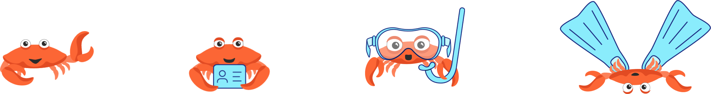

Skip to design process step
Overview
Roles
- Researcher and analyst
- UX and UI designer
Tools
- Google Forms
- Numbers for Mac
- Whimsical
- Sketch
- Adobe Illustrator
- Usability Hub
- InVision
- Maze
- Principle
- Keynote for Mac
- Style guide
- High-fidelity mockups
- Clickable prototypes
- Animated flow prototypes
- Assets for developer handoff
Deliverables
Timeframe
- 6 weeks
Problem
Scuba divers are taught to log each of their dives as proof of experience. But, paper logbooks are easily lost and damaged, and it can be a pain to upload information from a dive computer.* As a result, logging becomes a burden and many divers don’t log all their dives.
*A dive computer is a device worn during a dive that collects data
Solution
Dively offers a mobile digital logbook.* After a dive, users can upload data directly from their dive computer, or snap a photo of the dive computer screen for the app to read and log. Dively also stores the diver’s certification information and gear “outfits,” making both dive-day check-in and dive logging a breeze.
*This project is a concept and has not been shipped.
Research and Scoping
user research
What problems, if any, could a new app solve for scuba divers?
User survey
I began by creating an online survey to learn about scuba divers’ needs and frustrations regarding dive logging. 24 divers shared input.
Level of diving experience
More than 60% of respondents consider themselves casual divers, meaning they dive for fun when they have the chance.
Dive logging methods
More than 50% still use paper logbooks. While they are free of technical challenges, paper logbooks are easy to get wet or forget to bring on a dive trip. Most said they would prefer to either log data by connecting to their dive computer wirelessly or taking a photo of their dive computer screen.
Device preferences
More than 80% of respondents would use a dive logging app most or all the time on a mobile device. Half use iOS and the rest use Android or a combination of iOS, Android, and others.
App feature wishlist
From a list of possible features, respondents rated these on top:
- Automatic upload of dive information
- Search and sort among logged dives
- View dive history statistics
- Rate a dive
- Rate a dive site
- Save gear specifications and receive alerts when it’s time for servicing
Personal vs. social goals
More than 70% preferred an app for their personal use only. Fewer wanted to connect with other divers and/or share via social media.
App name
Divers ranked these possible names in the order shown:
- Dively
- Remora
- Barnacle
- Bubble Buddy
- Viz
Interviews
I held follow-up phone interviews with two survey respondents, who shared some other actionable input.
Dive history
The total number of dives is the most useful piece of information for an at-a-glance dive log summary.
Logging gear
Saving “outfits” of dive gear would avoid having to manually enter each piece of gear every time they log a dive.
Certifications
Saving dive certification info in the app would eliminate the need for divers to carry their certification cards.
lesson learned
Asking divers about possible app names in the user survey was useful for setting up the branding process early. Having a name selected before diving into logo development and preference testing also streamlined the ideation process.
competitive analysis
What other scuba dive logging apps are available?
Competitive analysis
Reviewing the landscape of existing scuba dive logging apps helped me identify a possible niche for a new product.
Narrowing the search
A quick keyword search revealed that there are a lot of apps for scuba divers. But, digging a little deeper, I found that many had poor or very few ratings, signaling they probably aren’t strong players in the competitive landscape.
I focused on apps that:
- Offer dive logging as a core feature
- Have at least a 4-star rating
- Have at least 100 reviews on Google Play or 20 on the App Store
- Are available for iOS
This left me with three apps for deeper analysis.
Dive Log
- Utilitarian UI
- Advanced data visualizations
- Users can connect with each other
MacDive
- Detailed data
- Options for technical divers
- No social aspect
Dive+
- Social media style UI
- In-app photo editing
- Less focus on dive log
Focusing on the audience
From the user survey and competitive analysis, I found an audience not yet served by the existing dive logging apps.
I created a mobile MVP, given that 85% of survey respondents would use a dive logging app usually or always on their phone.
lesson learned
Working on the user survey and a competitive analysis simultaneously was helpful, since findings and questions from both of them fed into each other.
user personas & user stories
What would casual divers want a new app to do?
User personas
Based on the user survey results, I created three personas representing casual divers who might want a new dive logging app.
The Opportunistic Diver
Age 37
Medford, MA
47 dives completed
Motivations
- Roman uses a paper dive log because that’s what he was taught, but it seems outdated given modern technology. He wants to make dive logging quick and painless and minimize the number of things he has to remember in order to go diving.
Frustrations
- Unsure why people still user old school paper logbooks
- Certain he’ll get his paper log wet
- Annoyed at having to use loose papers when he forgets his log
Goals
- Use technology to ease dive logging
- Capture basic dive data
- Kep a log that’s accessible in the cloud

The Avid Diver
Age 42
Bristol, UK
298 dives completed
Motivations
- Eva uses a paper dive log, but she knows there’s a wealth of data in her dive computer that she never sees because it’s a pain to remember how to use its fiddly buttons. She’s interested in an app that allows her to safely store her log and occasionally peruse her dive data.
Frustrations
- Can’t use desktop apps while traveling
- Getting info out of her dive computer is a pain
- Loses track of when gear needs to be serviced
Goals
- Upload data with minimal technological fuss
- Search and review dive history at a glance
- Keep on top of gear servicing
The Enthusiastic Newbie
Age 22
San Diego, CA
13 dives completed
13 dives completed
Motivations
- Kalani is taking a meticulous approach to her dive logging, trying to capture all the necessary information as well as personal notes on each dive. She doesn’t own a dive computer, and wants to transfer accurate dive statistics from rented computers to a digital log.
Frustrations
- Keeps getting paper log wet on the boat
- Rents dive computers and can’t remember all the statistics after returning them
Goals
- Capture accurate data without owning a dive computer
- Enter data in metric or imperial units
- Include notes and photos on each dive
User stories
Using the personas and the top ranked features in the online survey as a guide, I created user stories. Below are the MVP user stories for new and returning users.
New users
- Set up an account
- Configure my dive computer
- Save my gear and set servicing reminders
- Choose settings, such as location tracking and push notifications
- Fill in my dive certification info
Returning users
- Upload data from my dive computer via bluetooth or wifi
- Take a photo of my dive computer to upload basic data
- Manually edit and input data
- View my dive history
- Keyword search and sort past dives
- Rate a dive site and an individual dive
- Record dive info in imperial or metric units
- Upload photos
Would do
differently
It’s easy to throw in extra user stories thinking they’ll be no big deal to implement. But of course, even seemingly simple features can create complex design challenges. If I started again, I might trim the MVP user stories.
Information architecture
user flows, appmap, & content strategy
How will divers navigate the app?
User flows
To visualize how divers would accomplish key tasks, I created user flows capturing each of the MVP user stories.
"Appmap"
How do the user flows translate into app screens? I created a sitemap - I call it an “appmap” - that outlines the app architecture.
challenge
The overarching architecture of an app can make or break its usability, and I was challenged to identify the best structure for a dive logging app.
wireframes
What screen layouts will be most effective?
Wireframes
I sketched wireframes to test various layout options and create a clearer picture of each screen, first on paper and then in Whimsical. The process resulted in some tweaking of the appmap as issues arose.
User testing
I created a quick set of Maze missions with the low-fidelity mockups and asked two divers to perform a few tasks.
Tasks
Here's what I asked them to do:
- Take the tour and sign up
- View a list of your logged dives
- Log a dive by taking a photo of your dive computer
- Navigate to your gear list and add a new piece of gear
Results
The testers uncovered some aspects that needed to be fixed; most notably, they had a hard time finding where to log a dive and see their gear list.
Revisions
I made the following changes:
- Reorganized sections so each has its own button in the navbar
- Renamed “gear kit” to “gear outfit” and added explanatory copy
- Added a brief title to each feature description in the onboarding overview
Here are my initial revisions to the low-fidelity navbar based on the divers’ feedback:
Before user testing
Revised based on user testing
lesson learned
Content is, of course, king. I enjoy writing, yet it can be hard to create a content strategy without seeing it in the context of the screens. For products like this without a maketing site or loads of copy, I found that writing the content within the low-fidelity mockups was most efficient.
Visual design
branding
What look and feel are we going for?
Logo iterations
Based on input from the user survey, I decided on the name dively. This name captured the playful tone I was after and includes the word “dive,” which would help make the app discoverable in searches.
After some quick paper sketches, I moved to Illustrator to get more precise.
Preference testing
I sent several options for preference testing with UsabilityHub, which resulted in an exciting neck-and-neck race!
Results
With a total of 58 votes cast, two options surfaced as the clear favorites.
Votes: 20
Votes: 20
Votes: 10
Votes: 8
Votes: 1
Decision
Because dively’s MVP is mobile-only, I chose the logo that lends itself most readily to an app icon. I also thought this logo felt more natural and easy.
Revisions
I found the friendly, bubbly typeface Comfortaa, and removed the reflections from the bubbles for a more flat, modern look. I also applied a blue-to-teal color palette that evokes the sea and helps identify the mark as bubbles.
Icons
This product required some pretty specific iconography, so I created icons to indicate gear and functions.
Illustrations
To embody the app’s playful spirit, I created a crab character that turns up throughout the UI, congratulating the user and modeling dive gear.

lesson learned
For a mobile-only app, the icon that appears on the phone’s home screen is perhaps just as important as the logo. Keeping the platform in mind is key!
mockups
How does the style guide come to life in the app?
Design iterations
With the draft style guide in hand, I sat down with Sketch to think more deeply about how to apply the guidelines. My high-fidelity mockups went through several rounds of revisions based on design mentor and peer feedback - and resulted in numerous updates to the style guide.
Toggle
I wanted an easy way for the user to flip between the two subsections of the Log section: Summary and List. My design progression is shown below.
Draft 1
Draft 2
Final
Buttons
I started out thinking I should make the buttons something special, but they were too big and heavy. I pared them down to their essence - and to a pattern more expected in an iOS app.
Would do
differently
I could have taken the visual look and feel in a number of directions, for example by using underwater photographs instead of illustrations. If I had the resources, I would make quick mockups of different design directions and send them to the target audience for preference testing.
Testing and deliverables
user testing & animated flows
What details will enhance the user experience?
User testing and animated interactions
Using InVision, I created simple clickable prototypes for testing. I dropped them into Maze, where nine people completed the tasks on their own time and I led five one-on-one sessions.
While refining based on user feedback, I imagined the transitions and animations that would take place as a user moves through the screens. The typical prototyping tools weren’t up for the job, so I picked up Principle to help the prototypes come to life.
Task 1: Take the onboarding tour and log in
Users' sticking point
The onboarding tour was a bit long.
Revision
Consolidated to reduce the number of overview screens.
Task 2: View a list of your logged dives
Users' sticking point
Some users took a few seconds to find the “List” toggle.
Revision
None; all users were able to complete the task in a reasonable amount of time.

Task 3: Log a dive by taking a photo of your dive computer screen
Users' sticking point
To log a dive, many users first went to the Log section instead of the Add Dive section.
Revision
I added an “Add” button at the top of the Log section, which provides an alternate pathway to the Add Dive section.

Task 4: Save a new dive computer and add it to your “Tropical” gear outfit
Users' sticking point
After entering information about the new computer, some users were unsure whether or how they needed to save the information.
Revision
The “Save” button was all the way at the bottom of a long scrolling page, so I moved it to the top based on the Human Interface Guidelines. I also broke the content into collabsible sections to let users pick and choose the information they want to enter at a glance.

Final deliverables
In the end, I have the following assets:
- High-fidelity mockups
- Style guide
- Assets for developer hand-off
- Example animated interactions
- Carefully thinking through how a user configures a dive computer for uploading dive data with a photo
- Modernizing the Certifications section, such as by displaying cert cards as a 3D stack
- Conducting more user testing on each of the main tasks
Conclusion
This project was a fun opportunity to create a playful brand and helpful product for a niche audience. There are things that I would continue working on, like:
There are countless development challenges in here that could be ripe for solving. If you’d like to collaborate to bring dively to reality in the App Store, please get in touch!